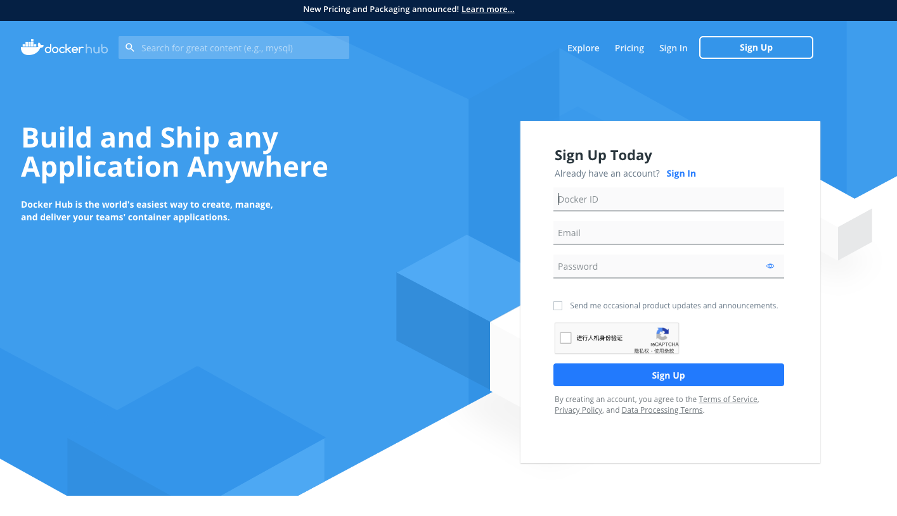
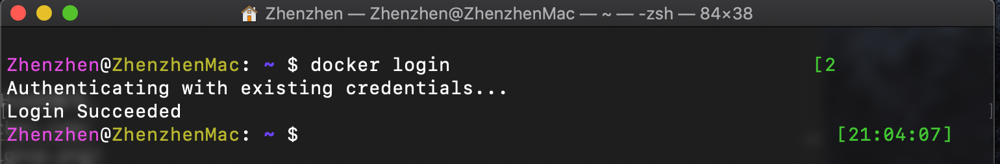
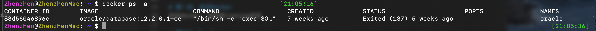
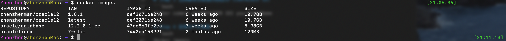
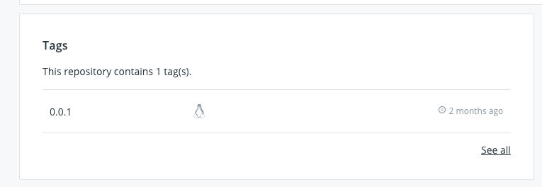

介绍如何实现自己build一个Docker image，然后push到自己到Docker Hub中的过程。
准备工作
需要自己注册一个Docker Hub的账号。
URL： https://hub.docker.com/

Step 1，启动Docker
启动docker，保持其running状态
Step 2，login
新建一个命令行窗口
1 | docker login |

Step 3 查看容器
1 | docker ps -a |

Step 4 选择要生成镜像的容器ID（CONTAINER ID)
1 | docker commit #{CONTAINER ID} yourImageName |
Step 5 查看生产的镜像
1 | docker images |
Step 6 修改镜像指向自己的Docker Hub
1 | docker tag #{IMAGE ID} dockerHub用户名/dockerHub仓库名:tag |

命令行中用户名和仓库名，对应自己Docker Hub的用户名及仓库名，最后冒号后的tag是你要打的tag，如下图中显示的样子，当然随便写

Step 7 push镜像至Docker Hub
1 | docker push dockerHub用户名/dockerHub仓库名:tag标签 |
tag标签可以是上一步中打的tag
经过如上步骤，便可以在自己的Docker Hub上看到刚刚push上来的镜像了